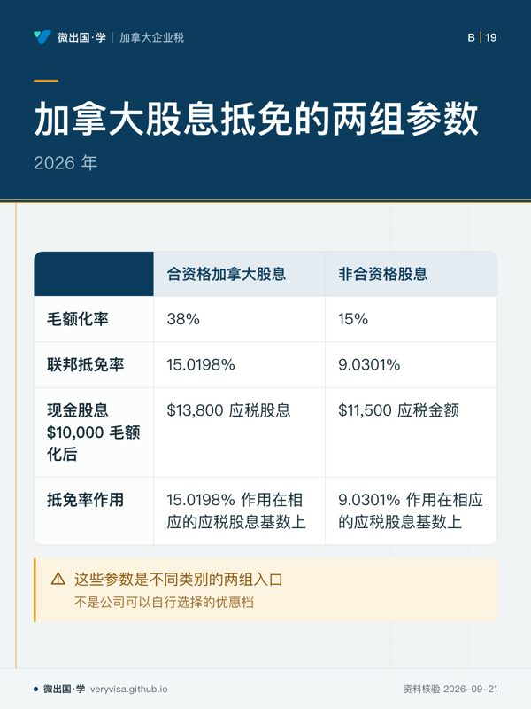
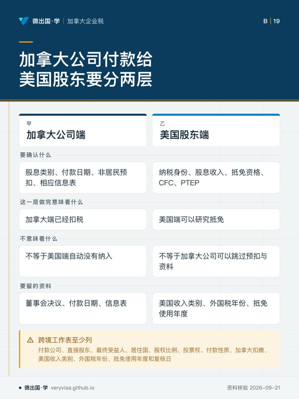
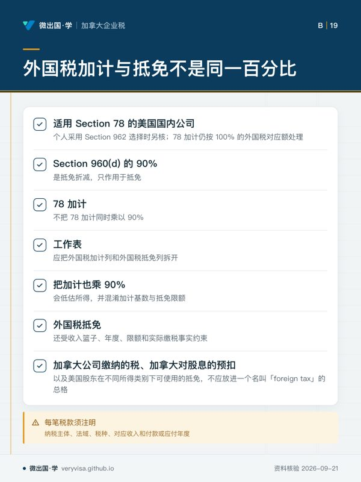
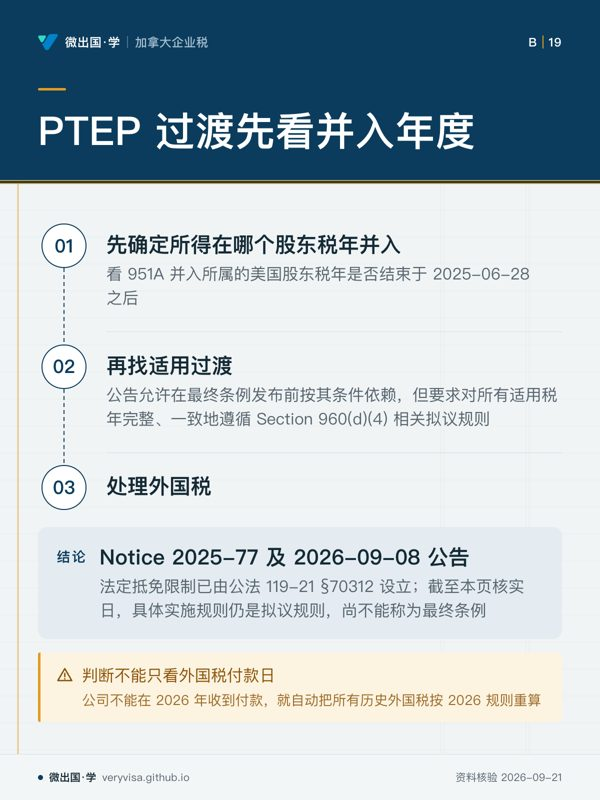

核实日期：2026-09-10｜本页口径：2026 税年加拿大公司向股东分配与美国 CFC 衔接。加拿大股息抵免、美国股东归属、外国税加计和抵免限制分别核算；下一次复核：2027-01-31。
公司把利润分给股东时，最危险的简化是只看银行付款金额。付款可能是合资格股息、非合资格股息、资本股息、贷款或其他分配；股东可能是加拿大个人、美国税务居民或另一家公司。加拿大端的毛额化和抵免解决的是股东在加拿大的股息税；美国端的 CFC、tested income、PTEP 和外国税抵免解决的是另一套问题。两端都正确，仍不代表可以用一个税率代替全部分析。
一、先认定分配的性质与收款人
董事会决议、股息类别、付款日期、公司账簿和股东身份应先固定。普通股息与资本股息不能只按“dividend”记账；向美国股东支付的股息还要检查加拿大预扣、美国纳入、条约和信息申报。股东兼董事从公司取钱时，若没有清晰决议和贷款条款，后续可能无法说明付款为何不是股息或工资。
收款人也必须按税务身份区分。加拿大个人收到加拿大公司股息时，会进入毛额化和股息抵免路线；加拿大公司收到公司股息，可能涉及 connected、Part IV 或其他公司间规则；美国股东则要把加拿大股息与其美国 CFC 所得纳入、外国税抵免和 PTEP 分开。银行账户相同，不代表税务路径相同。
二、2026 年加拿大股息抵免的两组参数
2026 年合资格加拿大股息毛额化率为 38%，联邦抵免率（按应税股息）为 15.0198%。非合资格股息毛额化率为 15%，联邦抵免率为 9.0301%。这些参数是不同类别的两组入口，不是公司可以自行选择的优惠档。

例：公司向加拿大个人支付现金股息 $10,000。若事实支持合资格股息，毛额化后的应税股息为 $13,800；若属于非合资格股息，应税金额为 $11,500。抵免率分别作用在相应的应税股息基数上。这个演示只说明计算结构，不代表最终个人税额；个人边际税率、省税、其他收入和抵免仍要另算。
公司政策不能用“利润来自主动经营，所以所有股息都是合资格”作为结论。股息类别要回到公司的收入、税务记录、指定方式和适用法条。会计利润、现金余额和合资格股息池是三件不同的事；现金足够支付不等于税务上可以把付款标成某一类股息。
三、加拿大公司付款给美国股东时要分两层
第一层是加拿大公司端：确认股息类别、付款日期、非居民预扣和相应信息表。第二层是美国股东端：确认美国纳税身份、加拿大股息收入、外国税抵免资格、CFC 关系和是否有 PTEP。加拿大端已经扣税，不等于美国端自动没有纳入；美国端可以研究抵免，也不等于加拿大公司可以跳过预扣与资料。
跨境工作表至少列：付款公司、直接股东、最终受益人、居住国、股权比例、投票权、付款性质、加拿大扣缴、美国收入类别、外国税年份、抵免使用年度和复核日。若股东链中有另一家外国公司，不能只凭第一层股东名称判断最终控制关系。
四、外国税加计与外国税抵免不是同一个百分比
本站核实一个容易被压缩错的美国计算边界：对适用 Section 78 的美国国内公司（个人采用 Section 962 选择时另核），78 加计仍按 100% 的外国税对应额处理，而 Section 960(d) 的 90% 是抵免折减，只作用于抵免，不把 78 加计同时乘以 90%。因此，工作表应把外国税加计列和外国税抵免列拆开。把加计也乘 90%，会低估所得，并混淆加计基数与抵免限额。✅源：IRC §78（uscode.house.gov）✅源：公法 119-21 §70312：90%及生效期（U.S. Government Publishing O…）
外国税抵免还受收入篮子、年度、限额和实际缴税事实约束。加拿大公司缴纳的税、加拿大对股息的预扣以及美国股东在不同所得类别下可使用的抵免，不应放进一个名叫“foreign tax”的总格。每笔税款须注明纳税主体、法域、税种、对应收入和付款或应付年度。
PTEP 的过渡规则也看并入年度。这一条所述“看 951A 并入所属的美国股东税年是否结束于 2025-06-28 之后”，来自 Notice 2025-77 及 2026-09-08 公告中的拟议实施规则。法定抵免限制已由公法 119-21 §70312 设立；截至本页核实日，具体实施规则仍是拟议规则，尚不能称为最终条例。公告允许在最终条例发布前按其条件依赖，但要求对所有适用税年完整、一致地遵循 Section 960(d)(4) 相关拟议规则。判断不能只看外国税付款日。公司不能在 2026 年收到付款，就自动把所有历史外国税按 2026 规则重算；应先确定所得在哪个股东税年并入，再找适用过渡。✅源：IRS REG-115145-25：拟议规则与依赖条件（irs.gov）
五、CFC 判断要画所有权链
美国 CFC 分析不能只看加拿大公司直接股东。这一条提醒，非美国居民且非美国公民配偶的股份在 Section 951(b) 股东和 CFC 判断中可按 Section 958(b) 排除归属，但另一套 Form 5471 Category 4 的控制测试可能独立运行。也就是说，一个归属规则的排除不能自动变成所有信息申报的排除。✅源：IRS Form 5471：股权归属及 Category 4（IRS）
所有权图应列直接持股、投票权、价值权、期权、配偶或关联人、公司间链条和取得日期。对每一条归属结论写出“哪一条规则把谁的股份算给谁”，并标明只用于 CFC、只用于信息表，还是同时影响两者。不要把家庭关系、法律登记和美国税法归属简单画成同一条线。
六、Section 956 与 tested unit 的两个边界
美国政府债务属于 Section 956(c)(2)(A) 的明文排除范围。加拿大公司持有或取得美国政府债务，不能仅因“美国资产”四个字就列为 Section 956 触发例。仍要看具体资产性质、公司结构、保证或融资安排；结论必须写事实，不要把“美国政府债务排除”扩展成所有美国债务都排除。✅源：IRC §956(c)(2)(A)（uscodeweb1.house.gov）
高税例外按 tested unit 及同国合并计算，不能因为同一业务同时享受小企业扣除和一般公司税率，就把同一 tested unit 拆成两个单位来制造例外。公司要把收入类别、同一国家的税负、实体和 tested unit 记录在一起；加拿大公司税率较低或较高只是输入，不是按 SBD 税阶切割美国 tested income 的许可。✅源：26 CFR §1.951A-2(c)(7)(iv)（eCFR (GPO / National Archives)）
七、底层基金不是自动 PFIC 免除
如果 CFC 持有另一家外国公司，而该外国公司底层又持有基金，不能因为上层 CFC 与 PFIC 规则有重叠，就自动认为底层基金不再需要分析。这一条的判断是，持有非 PFIC 外国公司至少 50% 仍可能产生对底层 PFIC 的间接持有问题。公司应画到底层资产和持有比例，收集基金分类、年度报表和选择记录。✅源：IRS Form 8621：间接股东与 CFC 重叠（IRS）
这也是为什么董事会只看“我们没有直接买基金”不足够。直接股东、CFC、外国子公司和基金之间的每一层都可能改变报告义务。跨境账务系统应保存实体层级、国家、持股比例、资产类型、收入类别和年度结算，而不是只保存最终现金分配。
八、用一张矩阵完成结账
结账时按以下顺序复核：一，付款性质和股息类别；二，收款人税务身份；三，加拿大毛额化、抵免与预扣；四，美国 CFC、归属和信息表；五，外国税加计、抵免与 PTEP 年度；六，Section 956、tested unit 和底层基金；七，所有权或资产事实是否在年内变化。每个格子都写适用税年、来源版本、假设和复核日期。
常见错误是把合资格股息率套给非合资格股息，把 90% 抵免折减也套进 78 加计，把美国政府债务写成 Section 956 触发资产，或者把 CFC 上层排除扩展到底层 PFIC。正确做法是把加拿大公司端、加拿大股东端和美国股东端分栏。所有数字标注“2026 税年、2026-09-10 核实、2027-01-31 复核”；控制链、付款性质或美国指引改变时提前复查。
九、付款日与税年不能混为一谈
公司在 2026 年 12 月作出决议、2027 年 1 月付款时，至少要分别记录股息成为应付的日期、实际付款日期、加拿大扣缴日期和美国股东所属税年。董事会决议、总账分录与银行流水若只有一个日期，后续就无法判断哪一年度的股息、预扣和外国税抵免应进入工作表。跨年付款尤其不能用“银行过账年”替代法律和税务上的发生时点。
本页知识卡
不看正文也能拿到这一节的核心内容：先看导读，再看图。点图放大，左右翻页。
- 先看先从收款人往回看：身份不同，检查路线也不同。
- 易漏同一银行账户不能替代分配性质、决议和账簿的判断。
- 下一步去练习，按收款人身份逐项判断公司端和股东端。

- 先看先对照例子的两个应税金额，确认计算结构不是同一路径。
- 易漏不能用「利润来自主动经营，所以所有股息都是合资格」作为结论；会计利润、现金余额和合资格股息池是三件不同的事。
- 下一步去练习，拿付款事实反查股息类别和计算结构。

- 先看先看两行「不等于」：不能把一端工作替代另一端。
- 易漏若股东链中有另一家外国公司，不能只凭第一层股东名称判断最终控制关系。
- 下一步去练习，沿股东链逐层核对付款和抵免资料。

- 先看先看加计列和抵免列：两种处理不要放进同一列。
- 易漏TKU-0795 记录的是容易被压缩错的美国计算边界，不能把两种处理合并理解。
- 下一步去练习，先按税款来源和对应收入分列，再检查限额。

- 先看先从并入税年判断过渡适用，再去看外国税。
- 易漏法源标注要保留「拟议」状态；依赖公告不等于已经有最终条例。
- 下一步去讲解，带着并入年度、付款年度和适用税年逐项核对。